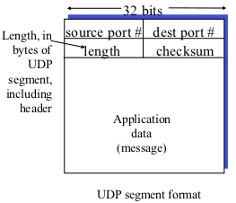
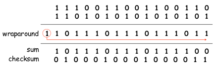

Tranport
Transport Layer
- Provide logical communication between app processes
- Transport protocols run in end systems
- Sender: breaks app messages into segments, passes to network layer
- Receiver: reassembles segments into messages, passes to app layer
Transport vs. network layer services:
- Network layer: data transfer between end systems
- Transport layer: data transfer between processes application
- Relies on, enhances network layer services
Transport Layer Services and Protocols
- Reliable, in-order delivery (TCP)
- Multiplexing
- Reliability and connection setup
- Congestion control
- Flow control
- Unreliable, unordered delivery: UDP
- Services not available:
- Delay guarantees
- Bandwidth guarantees
UDP(User Datagram Protocol)
Use
- Often used forstreaming multimedia apps
- Loss tolerant
- Rate sensitive
- Other UDP usage
Message Format

Checksum
Goal: end-to-end detection of errors (e.g. flipped bits) in transmitted segment
- Sender:
- Treat segment contents as sequence of 16-bit integers(represented in one s
complement representation)
- Checksum: addition (1 s'complement sum) of segment contents to be 1111111111111111
- Sender puts checksum value into UDP checksum field
- Receiver:
- Compute checksum of received segment
- Compute sum of segment and checksum; check if sum is 1111111111111111
- NO - error detected
- YES - no error detected. But maybe errors nonetheless?
Example

Coverage
- A pseudo-header
- IP Source Address(4 bytes)
- IP Destination Address(4 bytes)
- Protocol (2 bytes)
- UDP Length (2 bytes)
- UDP header
- UDP data